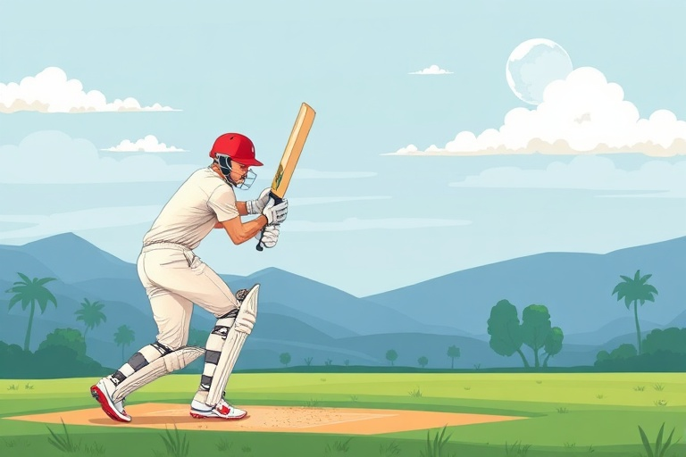

A Beginner's Guide to Understanding the Game of Cricket

Category: cricket | Language: enCricket is a popular team sport played with a bat and a ball on a large circular or oval field. At the center of the field is a 22-yard long strip called the pitch, where most of the action takes place. The game is played between two teams of eleven players each, and the main goal is to score more runs than the opposing team while preventing them from scoring when it is your turn to field.
The game is divided into sections called innings. During an innings, one team bats while the other team bowls and fields. The batting team tries to hit the ball and run between two sets of wooden stakes called wickets to score runs. Meanwhile, the bowling team tries to get the batters out by hitting the wickets with the ball or catching a hit ball before it touches the ground.
Scoring runs is the primary way to win. A batter earns one run by successfully running to the opposite end of the pitch after hitting the ball. However, if the ball reaches the boundary of the field, the team gets more points. A ball that hits the ground before crossing the boundary is worth four runs, while a ball hit directly over the boundary without touching the ground is worth six runs.
To stop the batting team, the fielding team must take wickets to remove batters from the game. Common ways to get a batter out include being bowled, where the bowler hits the wicket with the ball, or being caught, where a fielder catches the ball in the air. Another common rule is LBW (leg before wicket), which happens if the ball hits the batter's leg in a position that would have otherwise hit the stumps.
Developing basic skills is essential for any new player. Batters must practice their timing and hand-eye coordination to hit the ball away from fielders. Bowlers need to learn how to deliver the ball straight and with different speeds to confuse the batter. Fielders must be quick and have good catching skills to stop the ball and return it to the pitch as fast as possible to prevent the batters from running.
Playing cricket also requires specific equipment for safety and performance. Players use a flat wooden bat and a hard leather ball. Because the ball is very hard and can travel at high speeds, batters and wicket-keepers wear protective gear such as helmets, leg pads, and gloves. Learning these basic rules and practicing fundamental skills will help any beginner enjoy this exciting and strategic sport.